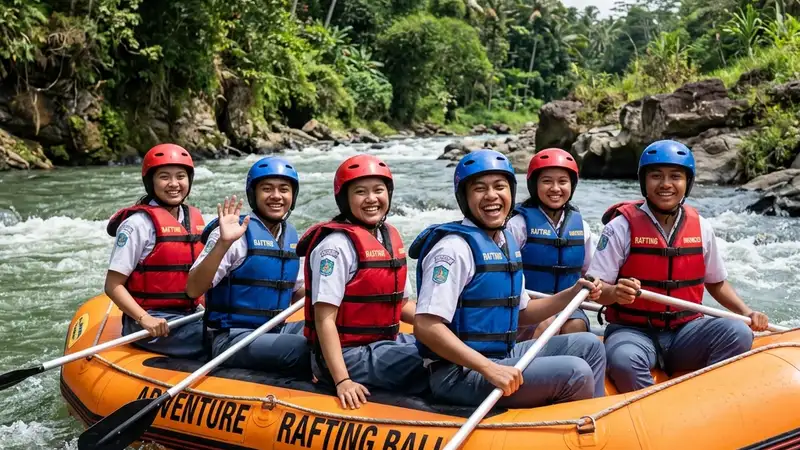

Rafting pelajar adalah kegiatan arung jeram yang dirancang khusus untuk kelompok siswa sekolah atau mahasiswa dengan jalur ringan hingga menengah, instruktur pendamping, dan standar keselamatan yang disesuaikan untuk peserta pemula.
- Rafting pelajar umumnya menggunakan jalur sungai dengan tingkat kesulitan ringan hingga menengah agar aman bagi pemula.
- Kegiatan ini sering dijadikan bagian dari study tour, karyawisata, atau program pembentukan karakter di sekolah.
- Paket biasanya sudah mencakup instruktur, perlengkapan keselamatan, dan dokumentasi kegiatan.
- Biaya dapat bervariasi tergantung jumlah peserta, jarak tempuh, dan fasilitas tambahan yang dipilih.
- Persiapan fisik dan pemahaman prosedur keselamatan menjadi faktor penting sebelum kegiatan dimulai.
Apa Itu Rafting Pelajar?
Rafting pelajar merujuk pada aktivitas mengarungi sungai menggunakan perahu karet yang dikemas khusus untuk kelompok usia sekolah, biasanya dengan jalur yang lebih terkendali dibandingkan paket rafting untuk umum atau pencari tantangan ekstrem.
Kegiatan ini umumnya berlangsung di sungai dengan arus kelas satu hingga dua, yang secara umum dianggap ramah bagi pemula karena arusnya cenderung stabil dan tidak terlalu deras. Operator biasanya menyesuaikan rute, durasi, dan jumlah instruktur pendamping berdasarkan usia dan jumlah rombongan.
Selain unsur petualangan, rafting pelajar sering disisipi nilai edukatif, seperti pengenalan terhadap lingkungan sungai, kerja sama tim, dan pelatihan kedisiplinan mengikuti instruksi keselamatan.
Mengapa Rafting Pelajar Semakin Diminati Sekolah?
Rafting pelajar semakin diminati karena dianggap mampu memadukan unsur rekreasi, edukasi, dan pembentukan karakter dalam satu kegiatan luar kelas.
Beberapa sekolah memasukkan rafting ke dalam agenda tahunan seperti karyawisata, retret siswa, atau kegiatan penutupan tahun ajaran. Selain memberi pengalaman baru, kegiatan ini juga dianggap membantu siswa keluar dari rutinitas belajar di kelas dan belajar menghadapi tantangan fisik secara terkontrol.
Tren ini juga didorong oleh semakin banyaknya operator wisata air yang menyediakan paket khusus rombongan sekolah dengan skema harga kelompok dan pendampingan ekstra.
Apa Manfaat Rafting bagi Pelajar?
Rafting memberi manfaat berupa peningkatan kerja sama tim, kepercayaan diri, dan kemampuan mengikuti instruksi di bawah tekanan, selain manfaat fisik dari aktivitas mendayung.
Manfaat tersebut dapat dijelaskan lebih rinci sebagai berikut:
- Melatih kerja sama tim karena setiap perahu membutuhkan koordinasi dayung yang kompak antaranggota.
- Membangun kepercayaan diri saat siswa berhasil melewati rintangan arus sungai secara bertahap.
- Melatih kedisiplinan mengikuti arahan instruktur demi keselamatan bersama.
- Memberi pengalaman mengenal alam secara langsung, termasuk ekosistem sungai dan lingkungan sekitarnya.
- Menjadi sarana refreshing yang menyeimbangkan rutinitas akademik yang padat.
Bagaimana Cara Kerja Kegiatan Rafting untuk Rombongan Pelajar?
Kegiatan rafting pelajar umumnya dimulai dengan briefing keselamatan, pembagian kelompok, pemasangan perlengkapan, lalu pengarungan sungai didampingi instruktur di setiap perahu.
Secara umum, tahapannya meliputi:
- Registrasi dan pembagian kelompok sesuai kapasitas perahu.
- Briefing keselamatan dan pengenalan teknik dasar mendayung.
- Pemasangan pelampung, helm, dan perlengkapan keselamatan lainnya.
- Pengarungan sungai dengan pendampingan instruktur di setiap perahu.
- Sesi evaluasi dan dokumentasi setelah kegiatan selesai.
Durasi total kegiatan dapat bervariasi tergantung jarak tempuh sungai dan jumlah rombongan, namun umumnya berlangsung dalam hitungan jam, bukan sepanjang hari penuh.
Apa Saja Faktor yang Perlu Diperhatikan Sebelum Memesan Rafting Pelajar?
Faktor utama yang perlu diperhatikan meliputi tingkat kesulitan jalur, rasio instruktur terhadap peserta, kelengkapan alat keselamatan, dan kejelasan prosedur darurat dari operator.
Beberapa faktor tersebut antara lain:
- Tingkat kesulitan jalur sungai, sebaiknya dipilih yang sesuai dengan pengalaman peserta.
- Rasio instruktur dan peserta, semakin kecil rasio biasanya semakin ketat pengawasannya.
- Kualitas dan kelengkapan alat keselamatan, seperti pelampung dan helm yang layak pakai.
- Kejelasan prosedur darurat, termasuk keberadaan tim rescue di sepanjang jalur.
- Reputasi dan pengalaman operator dalam menangani rombongan pelajar sebelumnya.
Apa Saja Kesalahan Umum yang Sering Terjadi dalam Rafting Pelajar?
Kesalahan umum yang sering terjadi meliputi kurangnya briefing keselamatan, memilih jalur yang tidak sesuai usia peserta, dan minimnya koordinasi dengan pihak sekolah terkait kondisi kesehatan siswa.
Beberapa contoh kesalahan yang sebaiknya dihindari:
- Melewatkan sesi briefing keselamatan karena keterbatasan waktu.
- Memilih jalur dengan tingkat kesulitan yang tidak sesuai kemampuan peserta.
- Tidak mendata kondisi kesehatan siswa, seperti riwayat alergi atau kondisi fisik tertentu.
- Mengabaikan cuaca dan kondisi debit air sebelum kegiatan dimulai.
- Tidak menyiapkan pakaian ganti dan perlengkapan pendukung lainnya.
Bagaimana Tips Memilih Paket Rafting Pelajar yang Tepat?
Tips memilih paket rafting pelajar yang tepat meliputi memeriksa legalitas operator, membandingkan fasilitas antar paket, serta memastikan adanya asuransi kegiatan bagi peserta.
Beberapa tips praktis yang dapat diterapkan:
- Bandingkan beberapa operator dan tanyakan detail paket secara tertulis.
- Pastikan operator memiliki instruktur bersertifikat dan pengalaman menangani rombongan sekolah.
- Cek ketersediaan asuransi kecelakaan selama kegiatan berlangsung.
- Diskusikan kebutuhan khusus rombongan, seperti jumlah peserta dan rentang usia.
- Lakukan survei lokasi sebelum hari pelaksanaan bila memungkinkan.
Berapa Biaya Rafting Pelajar Secara Umum?
Biaya rafting pelajar dapat bervariasi tergantung jarak tempuh sungai, jumlah peserta, dan fasilitas tambahan seperti transportasi maupun konsumsi yang disertakan dalam paket.
Secara umum, harga paket rombongan cenderung lebih ekonomis dibandingkan pemesanan individu karena adanya skema harga kelompok. Untuk mendapatkan gambaran biaya yang akurat, sebaiknya panitia sekolah menghubungi langsung beberapa operator dan meminta rincian penawaran tertulis.
FAQ
Apakah rafting pelajar aman untuk siswa yang belum pernah mencoba arung jeram?
Rafting pelajar umumnya dirancang dengan jalur ringan dan pendampingan instruktur sehingga relatif aman untuk pemula, selama mengikuti briefing keselamatan dengan baik.
Berapa usia minimal yang disarankan untuk mengikuti rafting pelajar?
Usia minimal dapat bervariasi tergantung kebijakan operator, namun umumnya disarankan untuk siswa tingkat SMP ke atas dengan kondisi fisik yang memadai.
Apakah peserta wajib bisa berenang untuk mengikuti rafting?
Sebagian besar operator tidak mewajibkan peserta bisa berenang karena sudah dilengkapi pelampung, namun kemampuan dasar berenang tetap menjadi nilai tambah dari sisi keselamatan.
Arya
penulis artikel yang sudah berpengalaman di dalam dunia wisata outbound Batu Malang.